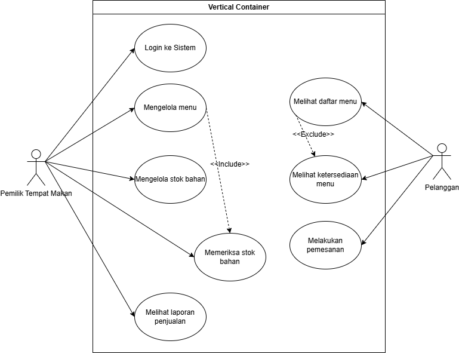
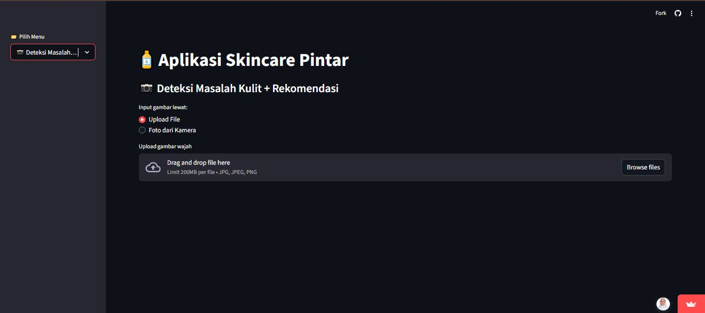
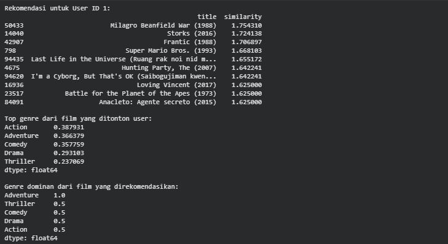
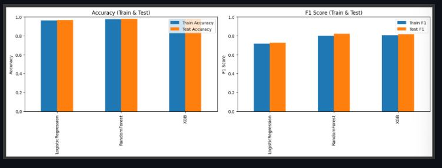
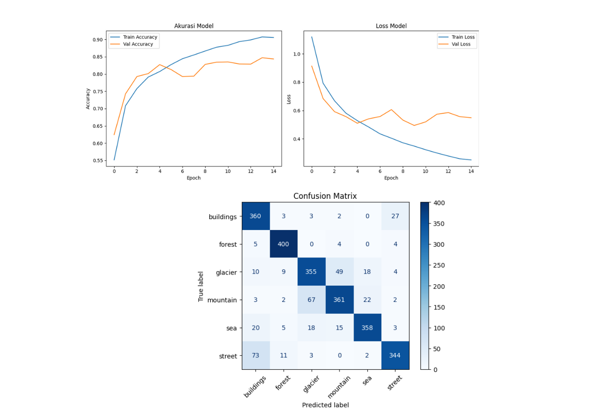
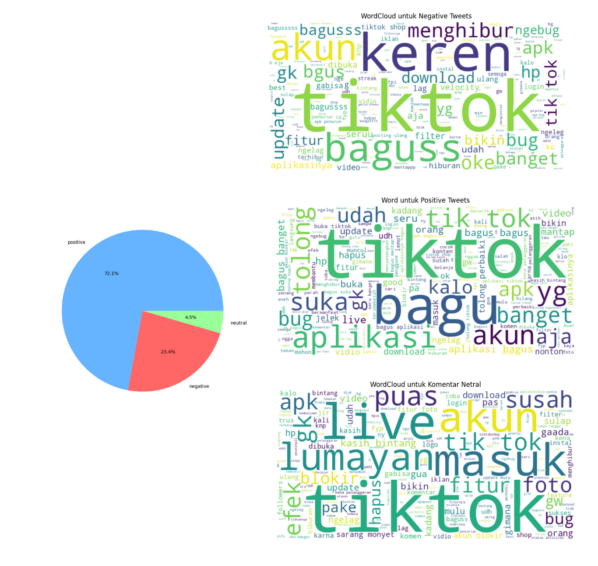
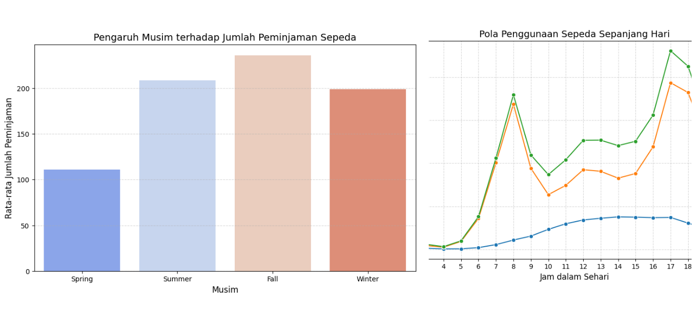
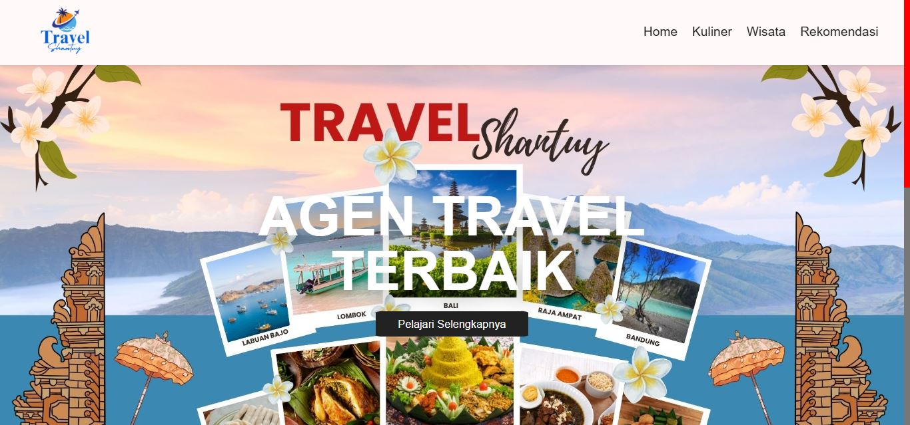

All Projects

🍽️ Restaurant Management Website for Client “Ibu Tami”
System Analyst who designs system flows, analyzes requirements, and creates technical documentation for Restaurant websites
View Details
🧴 Smart Skincare Application
A CNN-based Machine Learning application that classifies facial skin problems and recommends skincare products using content-based filtering.
View Details
🌱 WasteWise AI
A CNN-based model that classifies organic, inorganic, and hazardous waste, developed as part of a collaborative web project.
View Details
🎥 Movie Recommendation System
A hybrid recommendation system combining content-based and collaborative filtering to suggest personalized movies based on user preferences.
View Details
🩺 Diabetes Prediction
Building a binary classification model to predict whether a patient is at risk of Diabetes Positive or Diabetes Negative based on health and demographic data.
View Details
🖼️ Image Classification Using Convolutional Neural Network (CNN)
Built a Convolutional Neural Network (CNN) model to classify images from the Intel Image Classification dataset into six categories: buildings, forest, glacier, mountain, sea, and street.
View Details
💬 Sentiment Analysis of TikTok Reviews Using Lexicon-Based and Machine Learning
This project analyzed 10,000 TikTok user reviews from the Google Play Store using lexicon-based and Machine Learning (Logistic Regression, SVM, Random Forest) approaches.
View Details
🚴 Bike Sharing Using Exploratory Data Analysis (EDA)
A complete analytical workflow showing my ability to process raw datasets, clean data, perform EDA, and extract business insights beneficial for city mobility optimization.
View Details
Travel Shantuy
Built an interactive website showcasing the best tourist destinations, culinary delights, and recommendations. On this project, I was responsible for the UI design and implementation of the website interface.
View Details